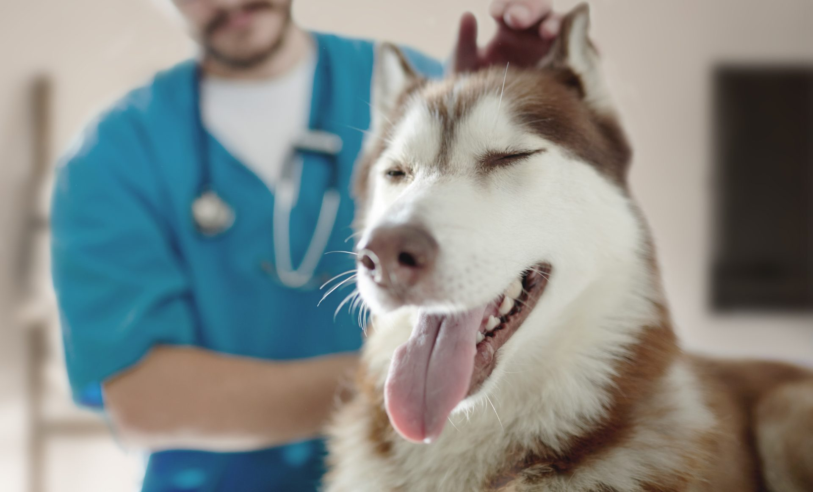
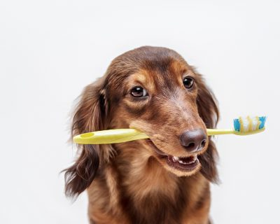

Routine dental care will keep your furry friend healthier and happier

We offer Digital Dental Radiographs
Both Cats & Dogs
Dental care and Oral surgery
Oral health is an important aspect of a pet’s quality of life and future health. At Leading Edge Veterinary Services, we not only are prepared to perform oral surgery and dental prophy procedures but can advise regarding the safety of products available for prevention. Prevention and control of periodontal disease in susceptible animals requires a multimodal approach, including diet, chew treats, home care and professional care.
There are many products claiming control of plaque and prevention of dental disease. If they have not been accepted by the Veterinary Oral Health Council (VOHC), these claims may be fraudulent. The VOHC reviews clinical studies from companies; these studies must verify that these products decrease accumulation of plaque and/or calculus by at least 20 percent. When reviewing products to control plaque look for the VOHC seal. Feel free to visit www.VOHC.org for more information.
When periodontal disease is present and dental prophy and oral surgery is required, Leading Edge Veterinary Services is dedicated in assuring the safety and quality of life of your pet by:
requiring preanesthetic bloodwork to screen for severe underlying disease;
examining the patient prior to anesthesia to check for significant heart disease or other underlying conditions which may make your pet more at risk for an unfavorable anesthetic event;
using the safest anesthetics on the market and providing an individualized approach to anesthesia;
providing pain management by local blocks, injectable pain relievers, and oral pain relievers as needed to aid recovery.
using digital dental radiographs to get a true view of dental issues that are present.
If you have any questions, concerns, or wish to make an appointment, please feel free to contact us at 715-934-9055.
